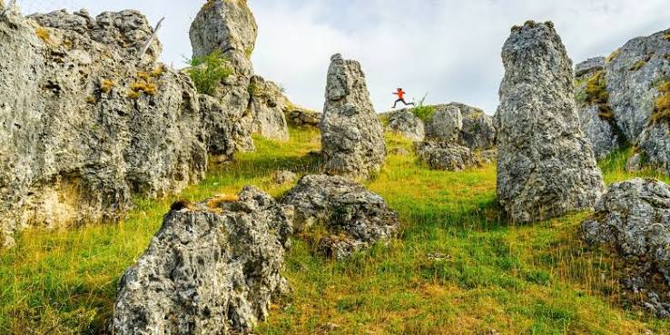
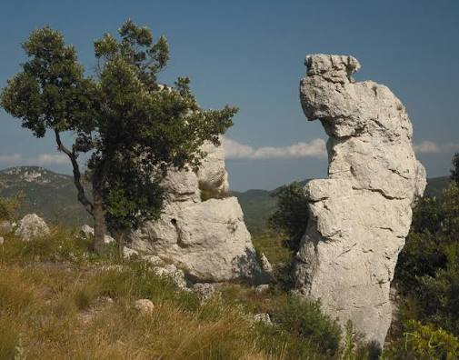

Chaos de
Nîmes-le-Vieux


⟹ Rochers & Curiosités géologiques ⟸
Sur la partie sud-est du Causse Méjean, entre les hameaux du Veygalier et de l'Hom, un front de falaises se hérisse sur près de quatre kilomètres de centaines de rochers en dolomie, troués, taillés et sculptés par l'érosion. Ce paysage ruiniforme, où chacun croit reconnaître une tour, un lion ou une marmite géante, est resté longtemps ignoré des cartes et des guides de la région.

C'est en 1908 que Paul Arnal, pasteur à Vébron et secrétaire général du Club Cévenol, remarque ce site alors inconnu des ouvrages de géographie. Il le baptise « Nîmes-le-Vieux » en écho au chaos de Montpellier-le-Vieux, un site comparable découvert vingt-cinq ans plus tôt sur le Causse Noir par le géographe Édouard-Alfred Martel, père de la spéléologie moderne.
En 1910, Martel consacre lui-même un article au site dans la revue Causses et Cévennes, décrivant ce « front de falaises » qui se développe à l'altitude moyenne de 1 100 mètres. Le mot « chaos », emprunté au grec ancien khaos, désigne un tel entassement naturel de blocs rocheux, généralement issu de phénomènes d'érosion et de dissolution du calcaire.

Aujourd'hui inscrit en zone cœur du Parc national des Cévennes, le site continue de nourrir l'imaginaire des visiteurs, qui prêtent volontiers aux rochers des noms d'animaux ou d'objets, entre la Marmite de Gargantua, l'Oule ou les arènes d'une mystérieuse cité de pierre.
Une roche cousine du calcaire : la dolomie qui compose le chaos est une roche sédimentaire proche du calcaire, mais plus riche en magnésium, ce qui lui donne cet aspect rugueux et cette teinte grisâtre caractéristiques au toucher.
Une érosion millénaire : les formes étranges du site résultent de la dissolution capricieuse de la dolomie par l'eau, un processus d'érosion à l'œuvre depuis des millions d'années sur ce plateau karstique dépourvu de rivière en surface.
Un paysage qui interroge l'imaginaire : chaque visiteur associe volontiers ces rochers déchiquetés à une silhouette, un animal ou un objet, prolongeant la tradition qui a donné naissance à la Marmite de Gargantua ou aux « arènes » de la mystérieuse cité de pierre.
Un cousin plus célèbre : le chaos de Montpellier-le-Vieux, sur le Causse Noir voisin en Aveyron, présente une formation similaire à plus grande échelle et fut le premier de ces sites à être exploré, dès la fin du XIXe siècle.
Adresse Chaos de Nîmes-le-Vieux, commune de Fraissinet-de-Fourques, 48400, à 3 km du col de Perjuret.
Accès depuis le col de Perjuret, sur la route entre Florac et Meyrueis, puis départ du sentier au hameau du Veygalier.
Site accessible librement toute l'année, entrée gratuite ; sentier pédagogique balisé entre l'Hom et Gally.
Sur place une exposition géologique au hameau du Veygalier permet de mieux comprendre la formation du chaos.